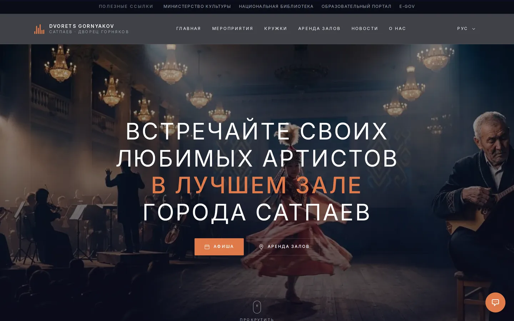
КГКП · Центр культуры и творчества им. Ш. Дильдебаева · Сатпаев · Ұлытау
выходит на цифровую сцену
Первый экран встречает живой афишей-порталом: крупные постеры событий, акценты сезона и прямой путь к билетам и записи — без лишних кликов.
Один переключатель — три способа смотреть афишу. Фильтры по месяцу, залу и типу события, подсветка дат и выгрузка в личный календарь одним нажатием.
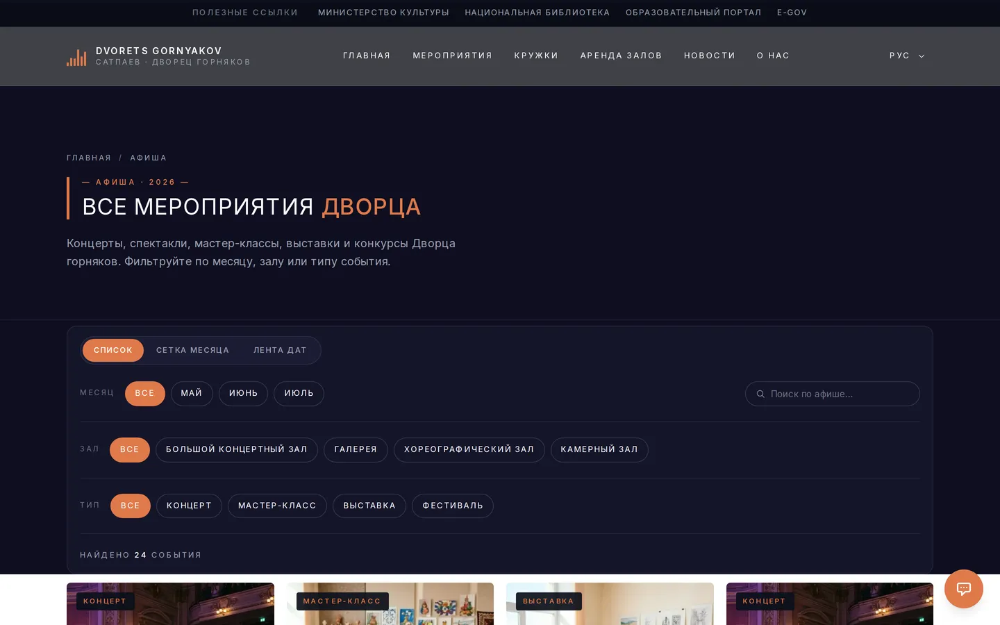
events / АфишаВсе творческие направления Дворца — в едином каталоге. Родитель открывает карточку студии, читает расписание и записывает ребёнка онлайн, не приходя лично.
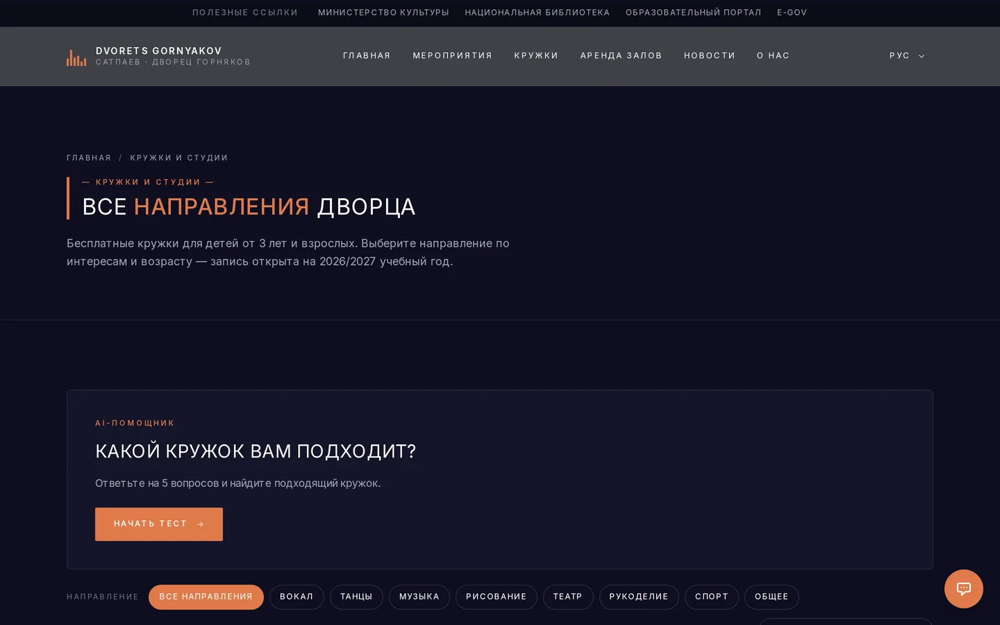
clubs / Кружки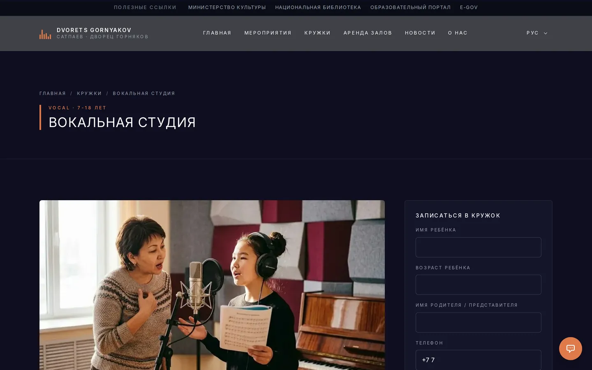
club / СтудияЛента новостей и анонсов рассказывает о жизни учреждения. Любую публикацию легко переслать, а событие — добавить в свой календарь.
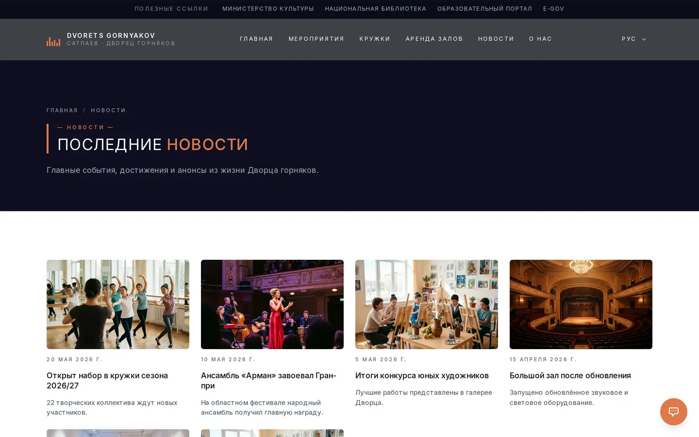
news / Новости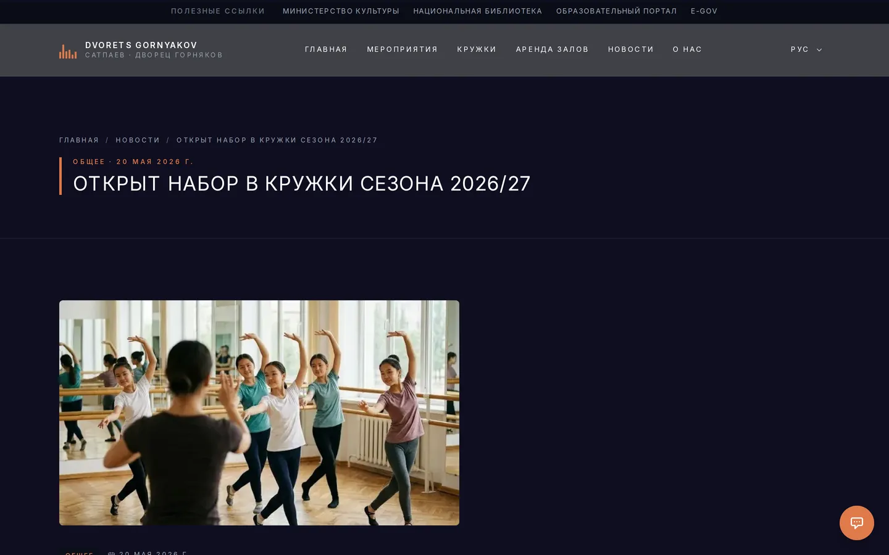
news / СтатьяБольшой, камерный и репетиционный залы доступны для аренды. Организатор выбирает дату, зал и оставляет заявку онлайн — Дворец перезванивает уже с готовым ответом.
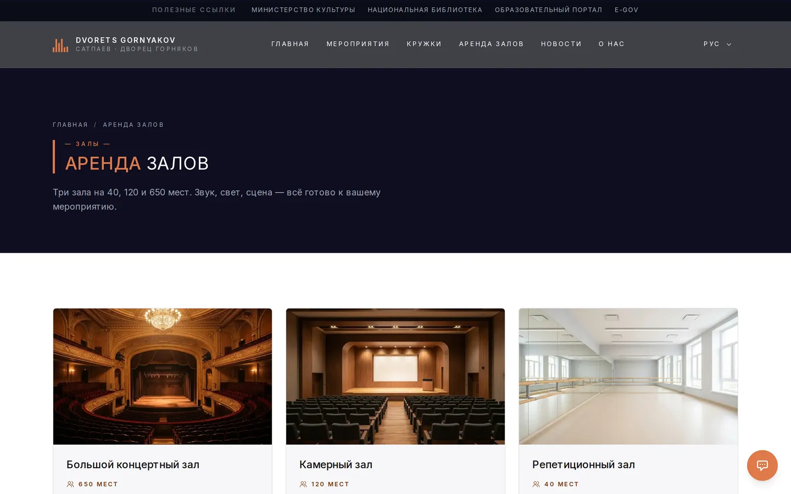
rent / АрендаВстроенный ИИ-помощник отвечает посетителям круглосуточно — қазақша и по-русски. Он знает расписание, кружки и условия аренды, потому что обучен на собственной базе знаний Дворца.
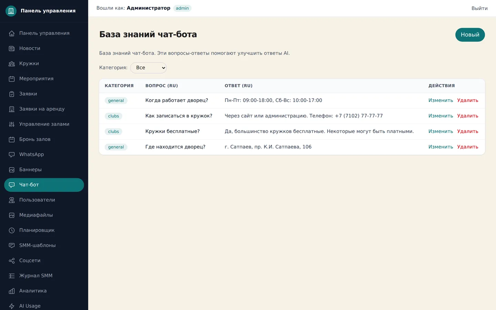
admin / База знаний ИИ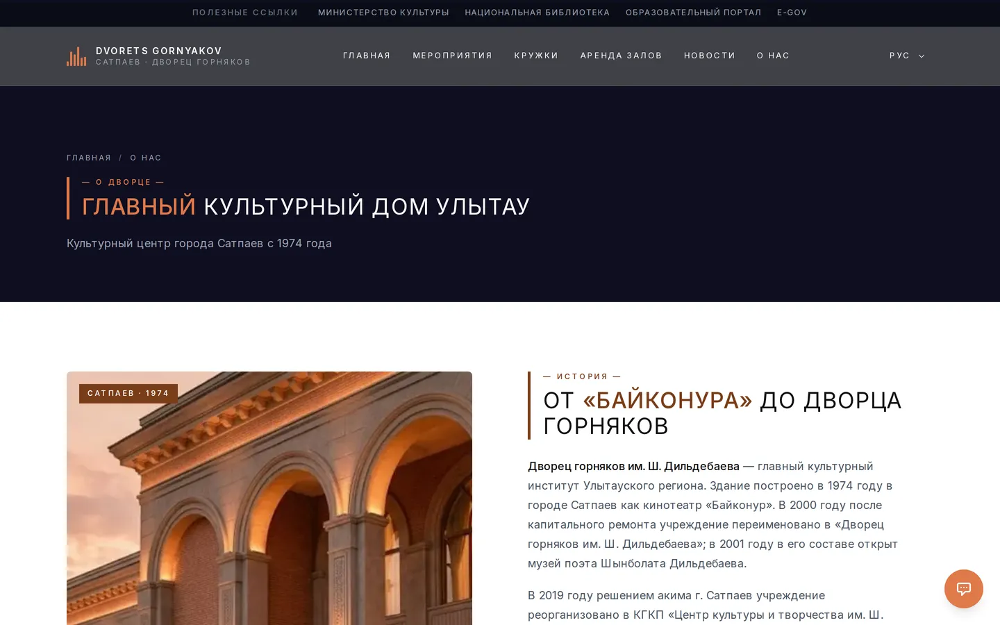
about / Біз туралыСотрудники Дворца управляют сайтом сами: добавляют события, кружки, новости и страницы через понятную панель. Роли admin и editor разграничивают доступ.
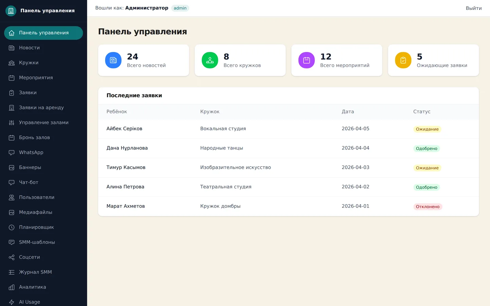
admin / Панель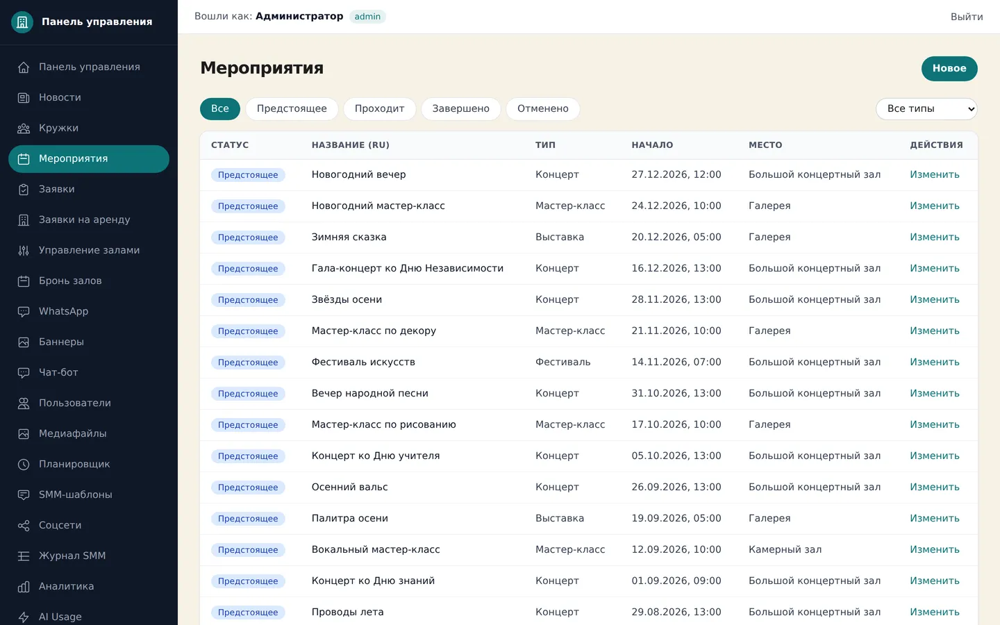
admin / СобытияРуководство видит реальную картину: сколько людей заходит, какие страницы популярны и сколько тратится на работу ИИ-помощника — всё прозрачно и под контролем.
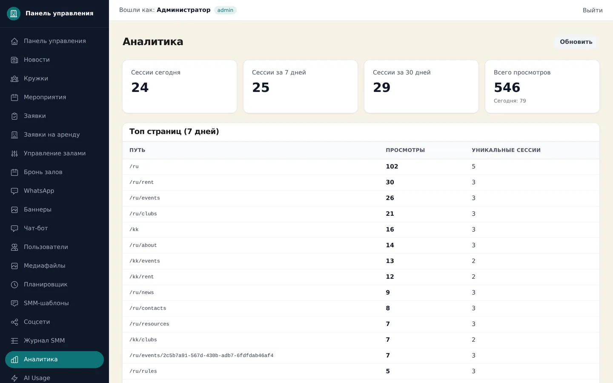
admin / Аналитика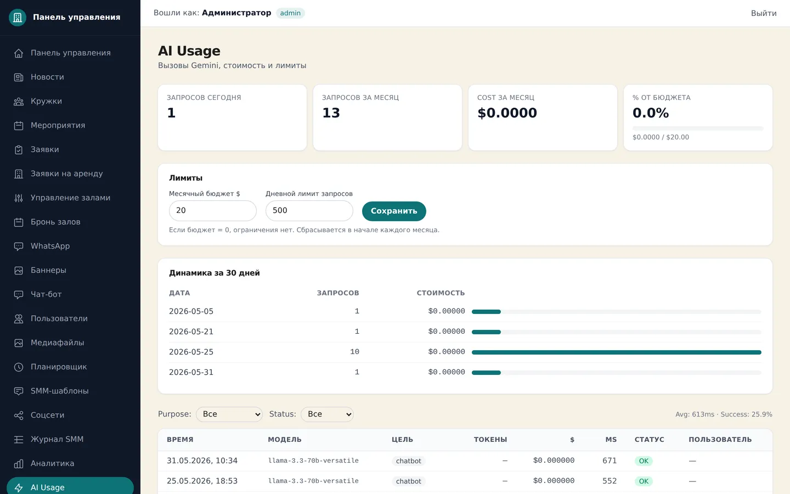
admin / ИИ-бюджетПланировщик публикует анонсы в Telegram-канал Дворца автоматически — по заданному расписанию и готовым SMM-шаблонам. Никто не забудет выложить афишу вовремя.
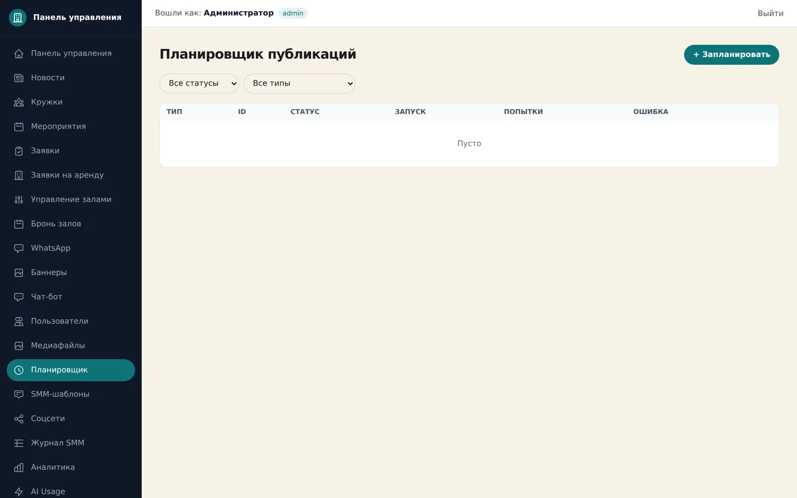
admin / ПланировщикАдрес, телефоны и часы работы — на одной странице. Интерактивная карта 2GIS прокладывает маршрут до Дворца от любой точки города.
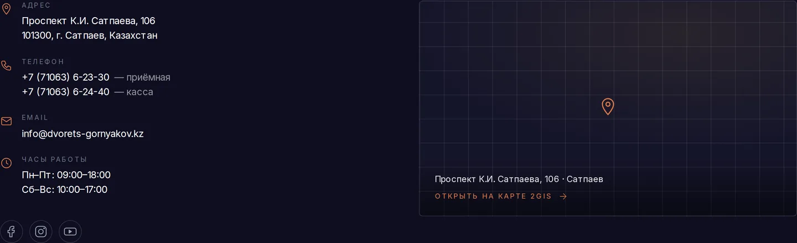
contacts / КонтактыДесятилетия культуры и творчества — теперь с цифровой сценой, открытой каждому жителю Ұлытау круглосуточно.
Дворец горняков · пр. К.И. Сатпаева, 106 · Ұлытау
КГКП Центр культуры и творчества им. Ш. Дильдебаева · г. Сатпаев · Ұлытау